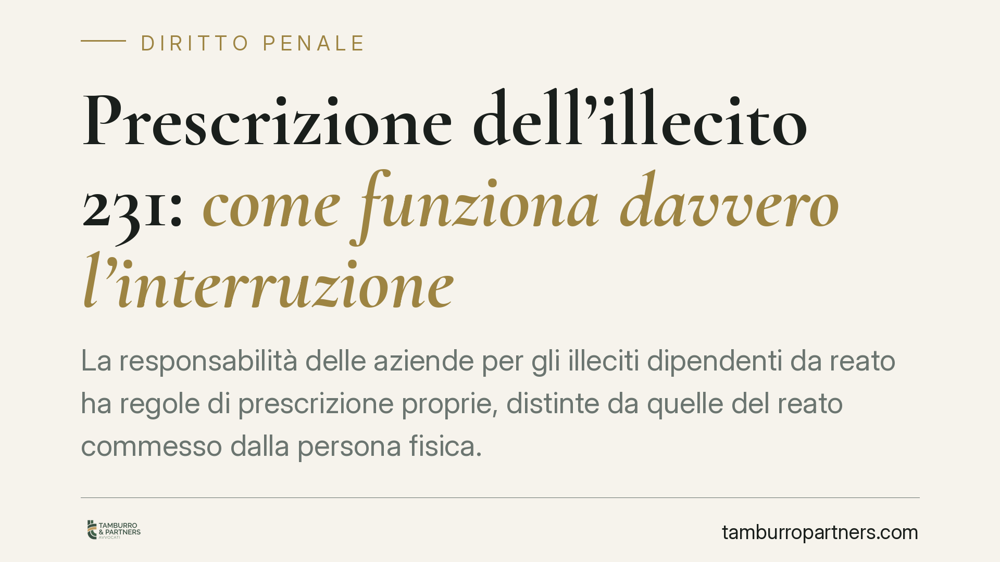

Prescrizione dell'illecito 231: come funziona davvero l'interruzione
La responsabilità delle aziende per gli illeciti dipendenti da reato ha regole di prescrizione proprie, distinte da quelle del reato commesso dalla persona fisica. Il termine è di cinque anni, ma la contestazione dell'illecito produce un effetto interruttivo che ne modifica sensibilmente la decorrenza. Comprenderne la meccanica è essenziale per valutare la posizione dell'ente in un procedimento.

Il fatto e perché conta
Quando un reato viene commesso nell'interesse o a vantaggio di un'impresa, accanto al procedimento contro la persona fisica può aprirsi un secondo binario: quello a carico dell'ente, disciplinato dal D.Lgs. 8 giugno 2001, n. 231. Si tratta di una responsabilità con fisionomia autonoma, che non coincide con la responsabilità penale del dipendente e segue proprie regole, comprese quelle sulla prescrizione.
La questione ricorrente riguarda entro quale termine l'illecito dell'ente può essere sanzionato e quali eventi incidono su quel termine. È un profilo tecnico spesso frainteso, anche perché si tende a sovrapporre la prescrizione dell'ente a quella del reato-presupposto, che risponde invece a regole del codice penale.
Inquadramento normativo
La disciplina è contenuta nell'art. 22 D.Lgs. 231/2001. Il comma 1 fissa il termine ordinario: le sanzioni amministrative dipendenti da reato si prescrivono nel termine di cinque anni dalla data di consumazione del reato.
Il comma 2 individua gli atti che interrompono la prescrizione. Tra questi rileva, in particolare, la contestazione dell'illecito amministrativo a norma dell'art. 59 dello stesso decreto. L'art. 59 stabilisce che, quando non deve emettere richiesta di archiviazione, il pubblico ministero contesta all'ente l'illecito amministrativo dipendente dal reato, con l'indicazione degli elementi identificativi dell'ente, dell'illecito e delle relative fonti di prova.
Qui sta il punto tecnico da rendere con precisione. La contestazione non "sospende" e non "congela" il termine: lo interrompe. Ai sensi del comma 3, per effetto dell'interruzione inizia a decorrere un nuovo termine di prescrizione. Ma il comma 4 introduce una regola specifica: se l'interruzione è avvenuta mediante la contestazione dell'illecito ex art. 59, la prescrizione non corre fino al momento in cui passa in giudicato la sentenza che definisce il giudizio.
In sintesi: cinque anni dalla consumazione del reato; se in quel periodo interviene la contestazione, il termine si interrompe e, da quel momento, non riprende a decorrere fino alla definizione con sentenza irrevocabile. La differenza rispetto alla prescrizione del reato individuale è netta e non va confusa.
Sul punto la giurisprudenza di legittimità ha valorizzato l'autonomia della prescrizione dell'ente rispetto a quella del reato-presupposto. In assenza di una pronuncia univocamente citabile nel caso di specie, l'affermazione va intesa come orientamento ricostruttivo della disciplina dell'art. 22, non come massima riferibile a una singola sentenza identificata.
Implicazioni pratiche
Per l'impresa il primo dato è che il tempo utile non si esaurisce con la prescrizione del reato commesso dal singolo. L'ente può restare esposto anche quando, sul versante individuale, i termini appaiono prossimi alla scadenza.
Il secondo dato è che la contestazione ex art. 59 rappresenta uno spartiacque. Fino a quel momento il termine quinquennale corre; dopo, l'esposizione si prolunga fino al giudicato. Ciò significa che la difesa dell'ente non può essere impostata come una scommessa sul decorso del tempo.
Il terzo dato è il più rilevante sul piano sostanziale: la solidità del Modello di organizzazione, gestione e controllo e la concreta operatività dell'Organismo di Vigilanza pesano, nel giudizio sull'ente, più del calendario della prescrizione. L'idoneità del modello e la sua efficace attuazione incidono sulla responsabilità stessa, non solo sui tempi. È su questo terreno che si gioca la parte decisiva della valutazione.
Cosa fare in concreto
- Ricostruisci le date rilevanti: individua con precisione la data di consumazione del reato-presupposto e l'eventuale data di contestazione dell'illecito ex art. 59, perché da esse dipende il calcolo dei termini.
- Verifica lo stato del procedimento: accerta se sia già intervenuta la contestazione all'ente e in quale fase si trovi il giudizio, per valutare correttamente l'esposizione residua.
- Aggiorna il Modello 231: sottoponi a revisione l'analisi dei rischi e le procedure, in particolare nelle aree connesse ai reati contestati o astrattamente ipotizzabili.
- Documenta l'attività dell'OdV: conserva verbali, flussi informativi e riscontri sulle segnalazioni, perché costituiscono elemento probatorio dell'efficace attuazione del modello.
- Distingui i due piani: è opportuno gestire separatamente la posizione della persona fisica e quella dell'ente, evitando strategie difensive che confondano le rispettive discipline della prescrizione.
---
*Contributo informativo a cura di Tamburro & Partners - Avv. Giuseppe Tamburro. Non costituisce parere legale.*
Ogni condominio ha una storia a sé.
Se gestisci un'amministrazione e vuoi un confronto su una specifica questione condominiale, scrivi allo studio. Ti rispondiamo entro un giorno lavorativo.